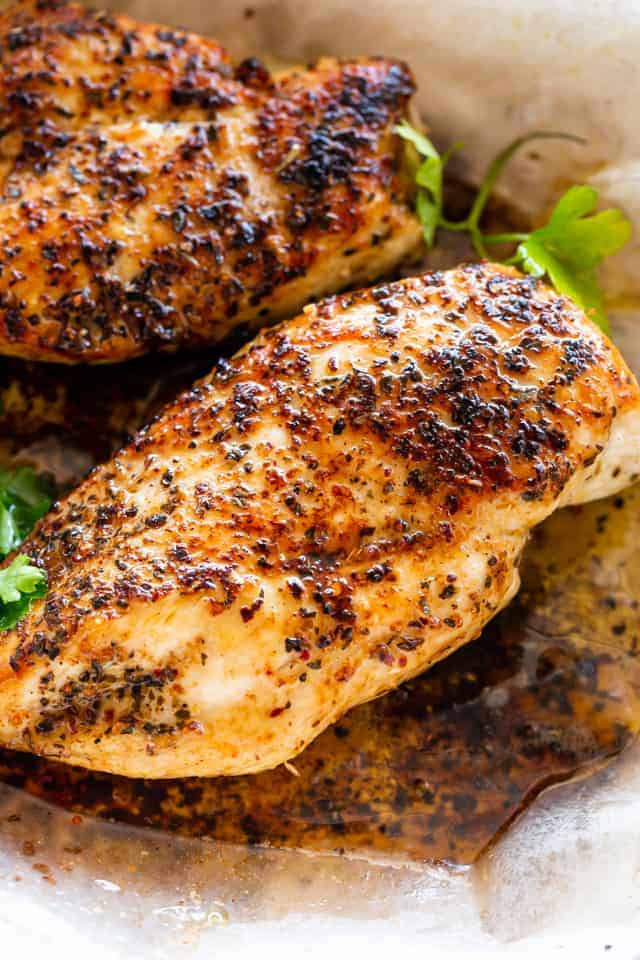

Sheene's Stove Top Chicken Breast

Below are the instructions on how to make Sheene's Super World Famous Stove Top Chicken Breast recipe!
Ingredients
- 1 package of chicken breast from Publix or Costco
- A Pan
- Cooking Oil
- Flour
- 1 tsp of pepper
- 1 tbsp of salt
- 1 inch slice of butter
First, heat the stove to medium-hot
Next, roll the chicken around in the flour
Now add an appropriat amount of cooking oil to the pan
After the oil, add in 1 tsp of pepper and 1 tbsp of salt into the pan
Once the the salt and pepper have dissolved, add in 1 inch of butter to the pan for extra flavoring
Add in the chicken breast
Cook for about 5 minutes on each side
Once the chicken is done cooking thoroughly, take it out the pan and set it on a paper towel to soak up the extra grease
After about letting it cool for about 5 minutes, serve and enjoy!